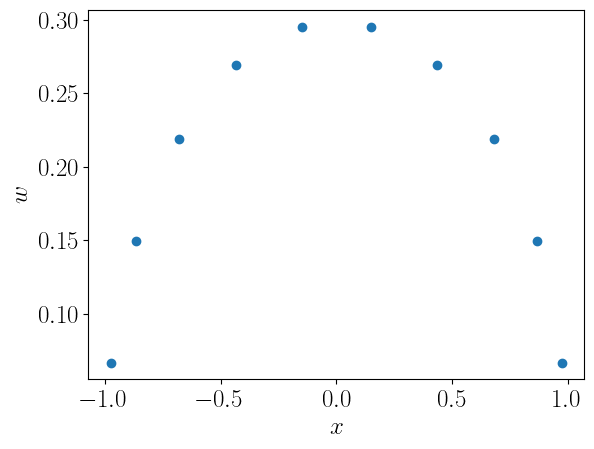
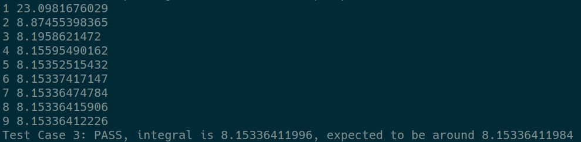

In practice, it's often not obvious how many subdivisions of an interval $[a,b]$ you need. Therefore, it is advantageous to recursively subdivide the interval and apply integration rules, until a target precision is achieved.
For example:
$$ \begin{align} S_1 &= \frac{1}{2}\left[f(a) + f(b)\right](b - a) \\ S_2 &= \left[\frac{1}{2}f(a) + f\left(\frac{a+b}{2}\right) + \frac{1}{2}f(b)\right]\frac{b - a}{2} \\ S_3 &= \left[\frac{1}{2}f(a) + f(x_1) + f(x_2) + f(x_3) + \frac{1}{2}f(b)\right]\frac{b - a}{4} \\ \dots \end{align} $$This process can be somewhat optimized by reusing earlier results:
This way you will never need to re-evaluate the value of $f(x)$, which is useful when $f$ is very complicated.
How does the error evolve? Remember the error of trapezoidal rule is:
$$ \varepsilon = \frac{1}{12}h^2\left[f'(a) - f'(b)\right] + O(h^4) $$Both $f'(a)$ and $f'(b)$ do not change when we refine the interval. Therefore the error decreases by a factor of $1/4$ every time we half $h$.
Knowing this, we can estimate the error at any refinement level using $\varepsilon_n \approx \frac{1}{3}|S_n - S_{n-1}|$.
Since we know that error on the $n$th refinement level is $1/4$ of the previous level, can we simply form a linear combination between two consecutive levels and cancel this error?
$$ S'_n = \frac{4}{3}S_n - \frac{1}{3}S_{n-1} $$Yes, this is called the Simpson's rule!
In fact, forming $S'_n$ is the preferred way to adaptively apply the Simpson's rule, since otherwise you will need to re-evaluate the function values at previous points.
The error estimate for adaptive Simpson's rule is:
$$ \varepsilon_n = \frac{1}{15}(S'_n - S'_{n - 1}) $$General strategy: perform the adaptive trapezoidal rule evaluation as before: $S_1, S_2, S_3, \dots$. Then form $S'_n$ at each refinement level and use it to estimate the error. Stop when the error reaches some tolerance.
I will ask you to implement the adaptive Simpson's rule in the homework:
template <typename F>
double adaptive_simpson(const F& f, double a, double b,
double tolerance) {
// TODO: implement Simpson's rule based on repeated
// application of the trapezoidal rule
}
So far, we have restricted our integral estimates on evenly spaced $\{x_i\}$. This set of integration rules are collectively called Newton-Cotes formulae.
If we are allowed to play with the spacing between points $x_i$ where the functions is evaluated, we can potentially achieve much faster convergence. The points $x_i$ are called abscissas.
Given a set of abscissas $x_i$ and weights $w_i$, the integral can be approximated as:
$$ \int_a^b f(x)\,dx \approx \sum_{i=0}^{n-1} w_i f(x_i) $$The nontrivial problem is to locate $x_i$ and calculate $w_i$.
The classical Gauss-Legendre case uses roots of the $n$th Legendre polynomial $P_n(x)$ for the abscissas $x_i$.
$$ \int_{-1}^1 f(x)\,dx \approx \sum_{i=0}^{n-1} w_i f(x_i) $$where $x_i$ are the $n$ solutions of $P_n(x) = 0$.
The Gauss-Legendre weights are defined to be:
$$ w_i = \frac{2}{(1 - x_i^2)[P'_n(x_i)]^2} $$where $P'_n(x_i)$ is the first derivative of $P_n(x)$ evaluated at the abscissas $x_i$.
Weights and abscissas for $N=10$ Gauss-Legendre quadrature:
Weights and abscissas for $N=10$ Gauss-Legendre quadrature:
Note that Gauss-Legendre quadrature formula works on the interval $[-1, 1]$. For an arbitrary interval $[a, b]$, you will need to map $x$ to $[-1, 1]$ using a change of variable:
$$ x = \frac{1}{2}(b - a)x' + \frac{1}{2}(b + a), \quad x'\in[-1, 1] $$So that:
$$ \int_a^b f(x)\,dx = \frac{1}{2}(b - a)\int_{-1}^1 f\left(x(x')\right)\,dx' \approx \frac{1}{2}(b - a)\sum_{i=0}^{n-1}w_i f\left(\frac{1}{2}(b-a)x'_i + \frac{1}{2}(b+a)\right) $$Gauss quadrature works extremely well when the function to be integrated is very smooth.
Integration using adaptive Simpson:
Integration using Gauss quadrature:
Why does Gauss quadrature work?
In essence, Gauss quadrature is using a degree $2n - 1$ polynomial to approximate the function $f(x)$. For any $f(x)$ that can be written as a polynomial of order $<2n - 1$, Gauss quadrature gives the exact value.
$x_i$ are chosen to be the roots of a series of orthogonal polynomials $p_n(x)$. Orthogonal means $\int_a^b p_n(x)p_m(x) = 0$ if $n\neq m$. Legendre polynomials are orthogonal.
We approximate our function $f(x)$ as an order $2n - 1$ polynomial:
$$ f(x) \approx p_n(x)q(x) + r(x) $$where $q(x)$ and $r(x)$ are polynomials of order $n - 1$. Since $p_n(x)$ is orthogonal to all $p_m(x)$ where $m < n$, and $q(x)$ can be written as combinations of $p_m(x)$, the integral:
$$ \int_a^b f(x)\,dx \approx \int_a^b [p_n(x)q(x) + r(x)]\,dx = \int_a^b r(x)\,dx $$Furthermore, if $x_i$ are roots of $p_n(x)$, then we have
$$ f(x_i) \approx p_n(x_i)q(x_i) + r(x_i) = r(x_i) $$Given $n$ and $\{x_i\}$, we can form the so-called Lagrange interpolation polynomials:
$$ \ell_i(x) = \prod_{\substack{m=0\dots n-1 \\ m\neq i}}\frac{(x - x_m)}{(x_i - x_m)} $$These polynomial have order $n - 1$, and have the property that $\ell_i(x_k) = \delta_{ik}$. We can write $r(x)$ as such an interpolation polynomial:
$$ r(x) = \sum_{i=0}^{n-1}r(x_i)\ell_i(x),\quad r(x_k) = \sum_{i=0}^{n-1}r(x_i)\delta_{ik} = r(x_i) $$This is a unique representation of $r(x)$.
Now we can write the Gauss quadrature as:
$$ \int_a^b f(x)\,dx \approx \int_a^b [p_n(x)q(x) + r(x)]\,dx = \int_a^b \sum_{i=0}^{n-1}r(x_i)\ell_i(x)\,dx $$Remember that $f(x_i) \approx r(x_i)$. Therefore we have:
$$ \int_a^b f(x)\,dx \approx \sum_{i=0}^{n-1}f(x_i)\int_a^b\ell_i(x)\,dx = \sum_{i=0}^{n-1}w_if(x_i) $$This approximation becomes exact if $f(x)$ is a polynomial of order $<2n - 1$.
When is Gauss Quadrature not good?
Several possibilities:
When integration limits go to infinity, the most common trick is to use change of variables to eliminate the infinity. For example:
$$ \int_a^bf(x)\,dx = \int_{1/b}^{1/a}\frac{1}{t^2}f\left(\frac{1}{t}\right)\,dt, \quad ab > 0 $$This can work when $a>0$ and $b\to\infty$, or $a\to-\infty$ and $b<0$. If the interval goes through 0, break it apart first.
If the integrand goes to infinity at end points as $1/\sqrt{x}$, we can do the following change of variable if singularity happens at $a$:
$$ \int_a^b f(x)\,dx = \int_0^\sqrt{b-a}2tf(a + t^2)\,dt, $$If singularity is at $b$, then:
$$ \int_a^b f(x)\,dx = \int_0^\sqrt{b-a}2tf(b - t^2)\,dt, $$In general, if the integrand diverges as $(x - a)^{-\gamma}$ with $0\leq\gamma < 1$:
$$ \int_a^bf(x)\,dx = \frac{1}{1-\gamma}\int_0^{(b-a)^{1-\gamma}}t^{\frac{\gamma}{1-\gamma}}f(t^{\frac{1}{1-\gamma}} + a)\,dt $$If the singularity as at the upper limit $b$, then:
$$ \int_a^bf(x)\,dx = \frac{1}{1-\gamma}\int_0^{(b-a)^{1-\gamma}}t^{\frac{\gamma}{1-\gamma}}f(b - t^{\frac{1}{1-\gamma}})\,dt $$